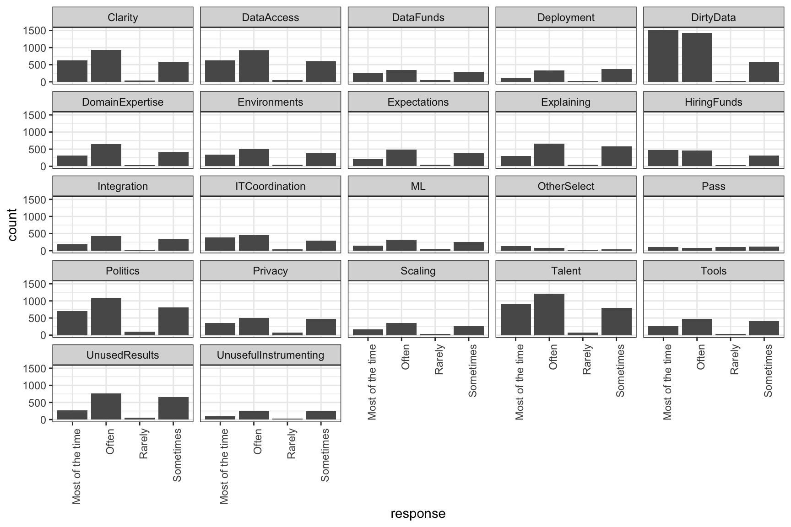
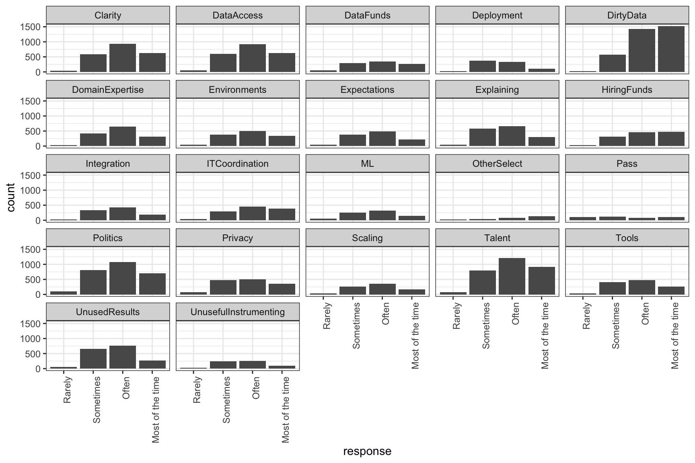
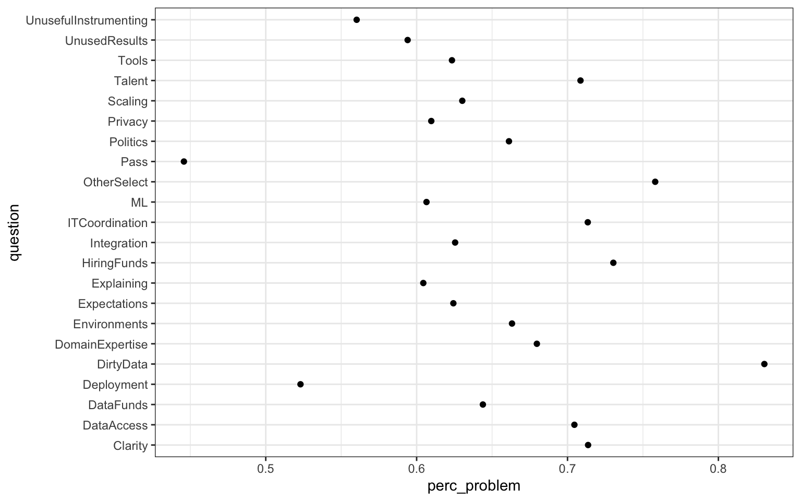
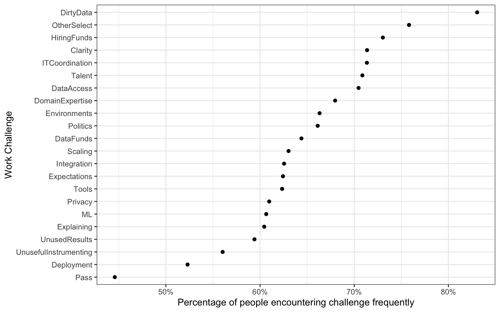

multiple_choice_responses_base <- read.csv("multipleChoiceResponses.csv")In early 2018, I gave a few conference talks on “The Lesser Known Stars of the Tidyverse.” I focused on some packages and functions that aren’t as well known as the core parts of ggplot2 and dplyr but are very helpful in exploratory analysis. I walked through an example analysis of Kaggle’s 2017 State of Data Science and Machine Learning Survey to show how I would use these functions in an exploratory analysis.
This post shares that analysis with some extra written commentary. If you’d like to watch the talks as well, both the RStudio::conf and New York R conference ones were recorded.
Reading in the data
First, we’ll try reading in our dataset with base R’s read.csv.
Let’s say we wanted to know the numbers of NAs in each column. We can use is.na to change each entry in a column to TRUE or FALSE, depending on whether it’s NA, and then sum the column (because TRUE evaluates as 1 and FALSE as 0) to get the total number of NAs.
# for one column
sum(is.na(multiple_choice_responses_base$Country))[1] 0To do this for a group of columns, say the first five, we can use summarise_at function. summarise_at takes three arguments: the dataset, which we pipe in, the set of columns we want to apply a function to, and a function to apply to each of the columns. It returns a dataframe with the same column names and one row with the result of our function. In our case, that will be the number of NAs in each column.
You can select the columns by position, as we’ll do here with 1:5, or by name. Note that if you do it by name, you need to put them within vars() (e.g. vars(GenderSelect:StudentStatus) or vars(GenderSelect, Age)).
# for five columns
multiple_choice_responses_base %>%
summarise_at(1:5, ~sum(is.na(.))) GenderSelect Country Age EmploymentStatus StudentStatus
1 0 0 331 0 0Wow that’s lucky! Four of them that don’t have any NAs. But … is this too good to be true? Let’s look at the entries of one column.
multiple_choice_responses_base %>%
count(StudentStatus) StudentStatus n
1 15436
2 No 299
3 Yes 981Yep. We see here we have a lot of "" entries instead of NAs. We can correct this with na_if from dplyr, which takes as an argument what we want to turn into NAs. We can also use %<>%, which is a reassignment pipe. While this is nice to save some typing, it can make it confusing when reading a script, so use with caution.
multiple_choice_responses_base %<>%
na_if("")
## is the same as:
multiple_choice_responses_base <- multiple_choice_responses_base %>%
na_if("")Now let’s count the NAs again.
multiple_choice_responses_base %>%
summarise_at(1:5, ~sum(is.na(.))) GenderSelect Country Age EmploymentStatus StudentStatus
1 95 121 331 0 15436And it’s fixed!
How could we have avoided this all in the first place? By using readr::read_csv instead of read.csv.
If you’re not familiar with ::, it’s for explicitly setting what package you’re getting the function on the right from. This is helpful in three ways:
- There can be name conflicts, where two packages have functions with the same name. Using
::ensures you’re getting the function you want. - if you only want to use one function from a package, you can use
::to skip the library call. As long as you’ve installed the package, you don’t need to have loaded it to get the function. - For teaching purposes, it’s nice to remind people where the function is coming from.
multiple_choice_responses <- readr::read_csv("multipleChoiceResponses.csv")Warning: One or more parsing issues, see `problems()` for detailsIt’s definitely faster, but it seems we have some errors. Let’s inspect them.
problems(multiple_choice_responses)# A tibble: 65 × 5
row col expected actual file
<int> <int> <chr> <chr> <chr>
1 297 84 1/0/T/F/TRUE/FALSE Rarely ""
2 673 84 1/0/T/F/TRUE/FALSE Most of the time ""
3 1210 207 a number - ""
4 1317 99 1/0/T/F/TRUE/FALSE Rarely ""
5 1595 99 1/0/T/F/TRUE/FALSE Often ""
6 2444 99 1/0/T/F/TRUE/FALSE Most of the time ""
7 2467 99 1/0/T/F/TRUE/FALSE Most of the time ""
8 2623 99 1/0/T/F/TRUE/FALSE Often ""
9 2631 99 1/0/T/F/TRUE/FALSE Sometimes ""
10 2725 99 1/0/T/F/TRUE/FALSE Often ""
# … with 55 more rows
# ℹ Use `print(n = ...)` to see more rowsWe see each row and column where a problem occurs. What’s happening is that read_csv uses the first 1000 rows of a column to guess its type. But in some cases, it’s guessing the column is an integer, because the first 1000 rows are whole numbers, when actually it should be double, as some entries have decimal points. We can fix this by changing the number of rows read_csv uses to guess the column type (with the guess_max argument) to the number of rows in the data set.
multiple_choice_responses <- readr::read_csv("multipleChoiceResponses.csv",
guess_max = nrow(multiple_choice_responses))Error-free!
Initial examination
Let’s see what we can glean from the column names themselves. I’ll only look at the first 20 since there are so many.
colnames(multiple_choice_responses) %>%
head(20) [1] "GenderSelect" "Country"
[3] "Age" "EmploymentStatus"
[5] "StudentStatus" "LearningDataScience"
[7] "CodeWriter" "CareerSwitcher"
[9] "CurrentJobTitleSelect" "TitleFit"
[11] "CurrentEmployerType" "MLToolNextYearSelect"
[13] "MLMethodNextYearSelect" "LanguageRecommendationSelect"
[15] "PublicDatasetsSelect" "LearningPlatformSelect"
[17] "LearningPlatformUsefulnessArxiv" "LearningPlatformUsefulnessBlogs"
[19] "LearningPlatformUsefulnessCollege" "LearningPlatformUsefulnessCompany"We can see that there were categories of questions, like “LearningPlatform,” with each platform having its own column.
Now let’s take a look at our numeric columns with skimr. Skimr is a package from rOpenSci that allows you to quickly view summaries of your data. We can use select_if to select only columns where a certain condition, in this case whether it’s a numeric column, is true.
multiple_choice_responses %>%
select_if(is.numeric) %>%
skimr::skim()| Name | Piped data |
| Number of rows | 16716 |
| Number of columns | 13 |
| _______________________ | |
| Column type frequency: | |
| numeric | 13 |
| ________________________ | |
| Group variables | None |
Variable type: numeric
| skim_variable | n_missing | complete_rate | mean | sd | p0 | p25 | p50 | p75 | p100 | hist |
|---|---|---|---|---|---|---|---|---|---|---|
| Age | 331 | 0.98 | 32.37 | 10.47 | 0 | 25 | 30 | 37 | 100 | ▁▇▂▁▁ |
| LearningCategorySelftTaught | 3607 | 0.78 | 33.37 | 25.79 | 0 | 15 | 30 | 50 | 100 | ▇▅▃▂▁ |
| LearningCategoryOnlineCourses | 3590 | 0.79 | 27.38 | 26.86 | 0 | 5 | 20 | 40 | 100 | ▇▃▂▁▁ |
| LearningCategoryWork | 3605 | 0.78 | 15.22 | 19.00 | 0 | 0 | 10 | 25 | 100 | ▇▂▁▁▁ |
| LearningCategoryUniversity | 3594 | 0.78 | 16.99 | 23.68 | 0 | 0 | 5 | 30 | 100 | ▇▂▁▁▁ |
| LearningCategoryKaggle | 3590 | 0.79 | 5.53 | 11.07 | 0 | 0 | 0 | 10 | 100 | ▇▁▁▁▁ |
| LearningCategoryOther | 3622 | 0.78 | 1.80 | 9.36 | 0 | 0 | 0 | 0 | 100 | ▇▁▁▁▁ |
| TimeGatheringData | 9186 | 0.45 | 36.14 | 21.65 | 0 | 20 | 35 | 50 | 100 | ▇▇▆▂▁ |
| TimeModelBuilding | 9188 | 0.45 | 21.27 | 16.17 | 0 | 10 | 20 | 30 | 100 | ▇▃▁▁▁ |
| TimeProduction | 9199 | 0.45 | 10.81 | 12.26 | 0 | 0 | 10 | 15 | 100 | ▇▁▁▁▁ |
| TimeVisualizing | 9187 | 0.45 | 13.87 | 11.72 | 0 | 5 | 10 | 20 | 100 | ▇▁▁▁▁ |
| TimeFindingInsights | 9193 | 0.45 | 13.09 | 12.97 | 0 | 5 | 10 | 20 | 303 | ▇▁▁▁▁ |
| TimeOtherSelect | 9203 | 0.45 | 2.40 | 12.16 | 0 | 0 | 0 | 0 | 100 | ▇▁▁▁▁ |
I love the histograms. We can quickly see from them that people self teach a lot and spend a good amount of time building models and gathering data, compared to visualizing data or working in production.
Let’s see how many distinct answers we have for each question. We can use n_distinct(), a shorter and faster version of length(unique()). We’ll use summarise_all, which is the same as summarise_at except that you don’t select a group of columns and so it applies to every one in the dataset.
multiple_choice_responses %>%
summarise_all(n_distinct) %>%
select(1:10)# A tibble: 1 × 10
Gender…¹ Country Age Emplo…² Stude…³ Learn…⁴ CodeW…⁵ Caree…⁶ Curre…⁷ Title…⁸
<int> <int> <int> <int> <int> <int> <int> <int> <int> <int>
1 5 53 85 7 3 4 3 3 17 4
# … with abbreviated variable names ¹GenderSelect, ²EmploymentStatus,
# ³StudentStatus, ⁴LearningDataScience, ⁵CodeWriter, ⁶CareerSwitcher,
# ⁷CurrentJobTitleSelect, ⁸TitleFitThis data would be more helpful if it was tidy and had two columns, question and num_distinct_answers. We can use tidyr::gather to change our data from “wide” to “long” format and then arrange it so we can see the columns with the most distinct answers first. If you’ve used (or are still using!) reshape2, check out tidyr; reshape2 is retired and is only updated with changes necessary for it to remain on CRAN. While not exactly equivalent, tidyr::spread replaces reshape2::dcast, tidyr::separate reshape2::colsplit, and tidyr::gather reshape2::melt.
multiple_choice_responses %>%
summarise_all(n_distinct) %>%
tidyr::gather(question, num_distinct_answers) %>%
arrange(desc(num_distinct_answers))# A tibble: 228 × 2
question num_distinct_answers
<chr> <int>
1 WorkMethodsSelect 6191
2 LearningPlatformSelect 5363
3 WorkToolsSelect 5249
4 WorkChallengesSelect 4288
5 WorkDatasetsChallenge 2221
6 PastJobTitlesSelect 1856
7 MLTechniquesSelect 1802
8 WorkDatasets 1723
9 WorkAlgorithmsSelect 1421
10 MLSkillsSelect 1038
# … with 218 more rows
# ℹ Use `print(n = ...)` to see more rowsLet’s take a look at the question with the most distinct answers, WorkMethodsSelect.
multiple_choice_responses %>%
count(WorkMethodsSelect, sort = TRUE)# A tibble: 6,191 × 2
WorkMethodsSelect n
<chr> <int>
1 <NA> 8943
2 Data Visualization 144
3 Other 144
4 Logistic Regression 66
5 Time Series Analysis 49
6 Neural Networks 45
7 A/B Testing 42
8 Data Visualization,Time Series Analysis 37
9 Text Analytics 36
10 Decision Trees 29
# … with 6,181 more rows
# ℹ Use `print(n = ...)` to see more rowsWe can see this is a multiple select question, where if a person selected multiple answers they’re listed as one entry, separated by commas. Let’s tidy it up.
First, let’s get rid of the NAs. We can use !is.na(WorkMethodsSelect), short for is.na(WorkMethodsSelect) == FALSE, to filter out NAs. We then use str_split, from stringr, to divide the entries up. str_split(WorkMethodsSelect, ",") says “Take this string and split it into a list by dividing it where there are ,s.”
nested_workmethods <- multiple_choice_responses %>%
select(WorkMethodsSelect) %>%
filter(!is.na(WorkMethodsSelect)) %>%
mutate(work_method = str_split(WorkMethodsSelect, ","))
nested_workmethods %>%
select(work_method)# A tibble: 7,773 × 1
work_method
<list>
1 <chr [5]>
2 <chr [12]>
3 <chr [17]>
4 <chr [14]>
5 <chr [12]>
6 <chr [1]>
7 <chr [14]>
8 <chr [12]>
9 <chr [7]>
10 <chr [5]>
# … with 7,763 more rows
# ℹ Use `print(n = ...)` to see more rowsNow we have a list column, with each entry in the list being one work method. We can unnest this so we can get back a tidy dataframe.
unnested_workmethods <- nested_workmethods %>%
tidyr::unnest(work_method) %>%
select(work_method)
unnested_workmethods# A tibble: 59,497 × 1
work_method
<chr>
1 Association Rules
2 Collaborative Filtering
3 Neural Networks
4 PCA and Dimensionality Reduction
5 Random Forests
6 A/B Testing
7 Bayesian Techniques
8 Data Visualization
9 Decision Trees
10 Ensemble Methods
# … with 59,487 more rows
# ℹ Use `print(n = ...)` to see more rowsGreat! As a last step, let’s count this data so we can find which are the most common work methods people use.
unnested_workmethods %>%
count(work_method, sort = TRUE)# A tibble: 31 × 2
work_method n
<chr> <int>
1 Data Visualization 5022
2 Logistic Regression 4291
3 Cross-Validation 3868
4 Decision Trees 3695
5 Random Forests 3454
6 Time Series Analysis 3153
7 Neural Networks 2811
8 PCA and Dimensionality Reduction 2789
9 kNN and Other Clustering 2624
10 Text Analytics 2405
# … with 21 more rows
# ℹ Use `print(n = ...)` to see more rowsWe see the classic methods of data visualization, logistic regression, and cross-validation lead the pack.
Graphing Frequency of Different Work Challenges
Now let’s move on to understanding what challenges people face at work. This was one of those categories where there were multiple questions asked, all having names starting with WorkChallengeFrequency and ending with the challenge (e.g “DirtyData”).
We can find the relevant columns by using the dplyr select helper contains. We then use gather to tidy the data for analysis, filter for only the non-NAs, and remove the WorkChallengeFrequency from each question using stringr::str_remove.
WorkChallenges <- multiple_choice_responses %>%
select(contains("WorkChallengeFrequency")) %>%
gather(question, response) %>%
filter(!is.na(response)) %>%
mutate(question = stringr::str_remove(question, "WorkChallengeFrequency"))
WorkChallenges# A tibble: 31,486 × 2
question response
<chr> <chr>
1 Politics Rarely
2 Politics Often
3 Politics Often
4 Politics Often
5 Politics Rarely
6 Politics Most of the time
7 Politics Often
8 Politics Often
9 Politics Rarely
10 Politics Most of the time
# … with 31,476 more rows
# ℹ Use `print(n = ...)` to see more rowsLet’s make a facet bar plot, one for each question with the frequency of responses.To make the x-axis tick labels readable, we’ll change them to be vertical instead of horizontal.
ggplot(WorkChallenges, aes(x = response)) +
geom_bar() +
facet_wrap(~question) +
theme(axis.text.x = element_text(angle = 90, hjust = 1))
This graph has two main problems. First, there are too many histograms for it to be really useful. But second, the order of the x-axis is wrong. We want it to go from least often to most, but instead rarely is in the middle. We can manually reorder the level of this variable using forcats::fct_relevel.
WorkChallenges %>%
mutate(response = fct_relevel(response, "Rarely", "Sometimes",
"Often", "Most of the time")) %>%
ggplot(aes(x = response)) +
geom_bar() +
facet_wrap(~question) +
theme(axis.text.x = element_text(angle = 90, hjust = 1))
Now we’ve got the x-axis in the order we want it. Let’s try dichotomizing the variable by grouping “most of the time” and “often” together as the person considering something a challenge. We can use if_else and %in%. %in% is equivalent to response == "Most of the time" | response == "Often" and can save you a lot of typing if you have a bunch of variables to match.
Grouping by the question, we can use summarise to reduce the dataset to one row per question, adding the variable perc_problem for the percentage of responses that thought something was a challenge often or most of the time. This way, we can make one graph with data for all the questions and easily compare them.
perc_problem_work_challenge <- WorkChallenges %>%
mutate(response = if_else(response %in% c("Most of the time", "Often"), 1, 0)) %>%
group_by(question) %>%
summarise(perc_problem = mean(response)) ggplot(perc_problem_work_challenge, aes(x = question, y = perc_problem)) +
geom_point() +
coord_flip()
This is better, but it’s hard to read because the points are scattered all over the place. Although you can spot the highest one, you then have to track it back to the correct variable. And it’s also hard to tell the order of the ones in the middle.
We can use forcats:fct_reorder to change the x-axis to be ordered by another variable, in this case the y-axis. While we’re at it, we can use scale_y_continuous andscales::percent to update our axis to display in percent and labs to change our axis labels.
ggplot(perc_problem_work_challenge,
aes(x = perc_problem,
y = fct_reorder(question, perc_problem))) +
geom_point() +
scale_x_continuous(labels = scales::percent) +
labs(y = "Work Challenge",
x = "Percentage of people encountering challenge frequently")
Much better! You can now easily tell which work challenges are encountered most frequently.
Conclusion
I’m a big advocate of using and teaching the tidyverse for data analysis and visualization in R (it runs in the family). In addition to doing these talks, I’ve released a DataCamp course on Categorical Data in the Tidyverse. I walk through some of the functions in this course and more from forcats. It’s part of the new Tidyverse Fundamentals skill track, which is suitable for people are new to R or those looking to switch to the tidyverse. Check it out and let us know what you think.
Some other good resources for learning the tidyverse are Hadley Wickham and Garrett Grolemund’s free R for Data Science book and RStudio’s cheat sheets. If you have questions, I recommend using the tidyverse section of RStudio community and/or the #rstats hashtag on Twitter. If you do, make sure you include a reproducible example (see best practices here) with the reprex package!